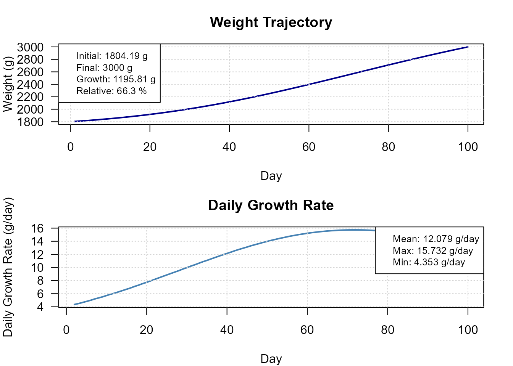
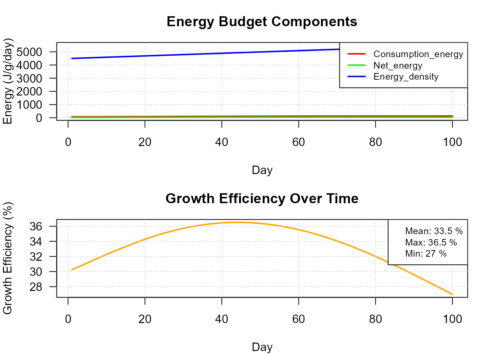
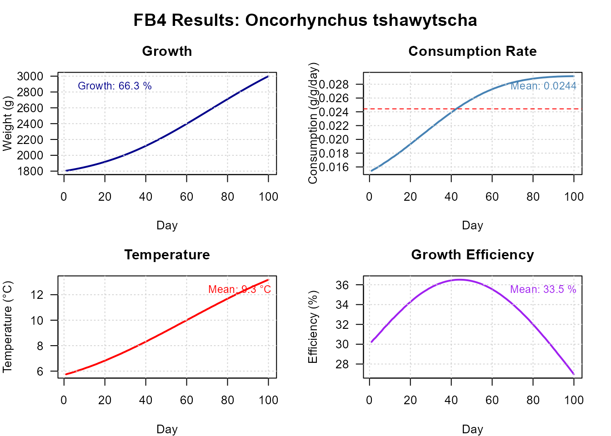
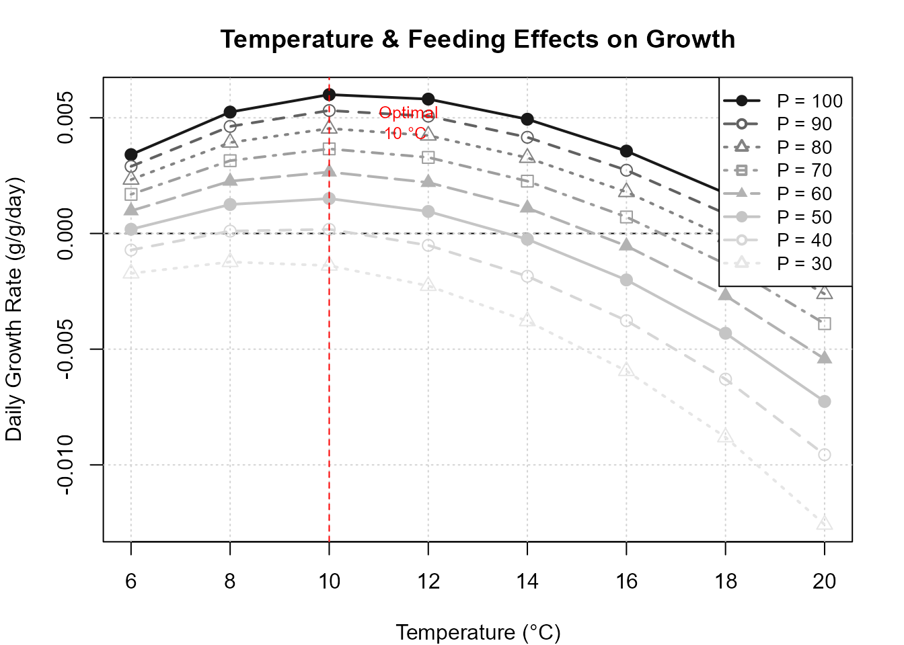

Introduction to fb4package
Hans Ttito
2026-03-29
Source:vignettes/fb4-introduction.Rmd
fb4-introduction.RmdOverview
fb4package implements Fish Bioenergetics 4.0
(Deslauriers et al. 2017) in R. The model allocates consumed energy
among metabolism, waste, and growth to produce daily estimates of fish
consumption and weight gain.
Working with the package follows a three-step pattern: build a
Bioenergetic object that holds species parameters,
temperature, diet, and initial conditions; pass it to
run_fb4() to run a simulation or fit a feeding level; then
extract or plot the results.
1. Species parameters
The package ships with a built-in database covering 105 models (73 species).
data(fish4_parameters)
cat("Species in database:", length(fish4_parameters), "\n")
#> Species in database: 73
head(names(fish4_parameters), 8)
#> [1] "Alosa pseudoharengus" "Gadus morhua"
#> [3] "Brevoortia tyrannus" "Thymallus arcticus baicalensis"
#> [5] "Clupea harengus" "Anchoa mitchilli"
#> [7] "Hypophthalmichthys nobilis" "Coregonus hoyi"Retrieve Chinook salmon (Oncorhynchus tshawytscha) and inspect one life stage:
chinook_db <- fish4_parameters[["Oncorhynchus tshawytscha"]]
stage <- names(chinook_db$life_stages)[1]
cat("Life stage used:", stage, "\n")
#> Life stage used: adult
sp_params <- chinook_db$life_stages[[stage]]
sp_info <- chinook_db$species_info
# Key consumption parameters
cat("CEQ:", sp_params$consumption$CEQ,
" CA:", sp_params$consumption$CA,
" CB:", sp_params$consumption$CB, "\n")
#> CEQ: 3 CA: 0.303 CB: -0.2752. Environmental and diet data
Temperature and diet are supplied as data frames with a
Day column.
days <- 1:100
# Seasonal temperature (°C)
temp_data <- data.frame(
Day = days,
Temperature = round(10 + 5 * sin(2 * pi * (days - 60) / 365), 2)
)
# Two-prey diet (constant proportions, J/g energy densities)
diet_data <- list(
proportions = data.frame(Day = days, Alewife = 0.7, Shrimp = 0.3),
prey_names = c("Alewife", "Shrimp"),
energies = data.frame(Day = days, Alewife = 4900, Shrimp = 3200)
)
head(temp_data, 3)
#> Day Temperature
#> 1 1 5.75
#> 2 2 5.80
#> 3 3 5.843. Building a Bioenergetic object
bio <- Bioenergetic(
species_params = sp_params,
species_info = sp_info,
environmental_data = list(temperature = temp_data),
diet_data = diet_data,
simulation_settings = list(initial_weight = 1800, duration = 100)
)
# Required when PREDEDEQ = 2 (energy density as function of weight)
bio$species_params$predator$ED_ini <- 4500
bio$species_params$predator$ED_end <- 5500
print(bio)
#> FB4 Bioenergetic Model
#> =========================
#> Species: Oncorhynchus tshawytscha (Chinook salmon (adult))
#> Setup: 1800 g → 100 days
#>
#> Components:
#> ✓ Parameters: 41 params (consumption, respiration, activity, sda, egestion, excretion, predator, source, notes)
#> ✓ Temperature: 100 days (5.8-13.2°C)
#> ✓ Diet: 2 prey species, 100 days
#>
#> Status: Ready for fitting4. Running simulations
4a. Direct simulation — fixed feeding level
Run the model with a constant proportion of maximum consumption (p = 0.8):
res_direct <- run_fb4(bio, strategy = "direct", p_value = 0.8)
print(res_direct)
#> FB4 Simulation Results
#> =========================
#> Species: Oncorhynchus tshawytscha
#> Method: Direct Execution
#> Duration: 100 days
#>
#> RESULTS:
#> Initial weight: 1800 g
#> Final weight: 2647.37 g
#> Growth: 47.1%
#> Total consumption: 4821.23 g
#> P_value: 0.8
#>
#> FITTING: ✓ Successful4b. Binary search — fit to a target final weight
Find the p that produces a target weight of 3 000 g after 100 days:
res_bs <- run_fb4(bio,
strategy = "binary_search",
fit_to = "Weight",
fit_value = 3000)
cat("Estimated p-value :", round(res_bs$summary$p_value, 4), "\n")
#> Estimated p-value : 0.9095
cat("Final weight :", round(res_bs$summary$final_weight, 1), "g\n")
#> Final weight : 3000 g
cat("Total consumption :", round(res_bs$summary$total_consumption_g, 1), "g\n")
#> Total consumption : 5771.2 g4c. MLE — uncertainty on p from observed weights
When multiple fish weights are available,
strategy = "mle" returns a point estimate of p
together with its standard error and 95% confidence interval:
set.seed(42)
obs_weights <- rnorm(30, mean = 3000, sd = 80) # 30 observed final weights
res_mle <- run_fb4(bio,
strategy = "mle",
fit_to = "Weight",
observed_weights = obs_weights)
cat("p-value (MLE) :", round(res_mle$summary$p_value, 4), "\n")
#> p-value (MLE) : 0.9106
cat("SE :", round(res_mle$summary$p_se, 4), "\n")
#> SE : 0.0055
cat("Converged :", res_mle$summary$converged, "\n")
#> Converged : TRUE4d. Bootstrap — non-parametric uncertainty
set.seed(42)
res_boot <- run_fb4(bio,
strategy = "bootstrap",
fit_to = "Weight",
observed_weights = obs_weights,
upper = 1,
n_bootstrap = 100,
parallel = FALSE)
cat("p mean (bootstrap):", round(res_boot$summary$p_mean, 4), "\n")
#> p mean (bootstrap): 0.911
cat("p SD :", round(res_boot$summary$p_sd, 4), "\n")
#> p SD : 0.00575. Comparing strategies
All three methods converge on similar p estimates for the same data — binary search gives a point estimate, while MLE and bootstrap additionally quantify uncertainty:
| Strategy | p estimate | SE / SD | Uncertainty type |
|---|---|---|---|
| binary_search | 0.9095 | NA | none (point estimate) |
| mle | 0.9106 | 0.0055 | SE (asymptotic) |
| bootstrap | 0.9110 | 0.0057 | SD (non-parametric) |
6. Analysing results
growth <- analyze_growth_patterns(res_bs)
feeding <- analyze_feeding_performance(res_bs)
energy <- analyze_energy_budget(res_bs)
cat(sprintf("Final weight : %.1f g\n",
growth$final_weight$estimate))
#> Final weight : 3000.0 g
cat(sprintf("Specific growth rate : %.4f g/g/day\n",
growth$specific_growth_rate$estimate))
#> Specific growth rate : 0.5108 g/g/day
cat(sprintf("Total consumption : %.1f g\n",
feeding$total_consumption$estimate))
#> Total consumption : 5771.2 g
cat(sprintf("Gross conversion efficiency: %.3f\n",
feeding$gross_conversion_efficiency$estimate))7. Visualising results
plot(res_bs, type = "growth")
Daily growth trajectory from binary search fit.
plot(res_bs, type = "energy")
Daily energy budget partitioning.
plot(res_bs, type = "dashboard")
Full dashboard (growth, consumption, temperature, energy).
8. Temperature × p sensitivity
Explore how final weight varies across temperatures and feeding levels:
plot(bio,
type = "sensitivity",
temperatures = seq(6, 20, by = 2),
p_values = seq(0.3, 1.0, by = 0.1))
#> === GROWTH SENSITIVITY ANALYSIS ===
#> Mode: SEQUENTIAL
#> Temperature range: 6 - 20 °C ( 8 values)
#> P-value range: 0.3 - 1 ( 8 values)
#> Total combinations: 64
#>
#> Processing temperature: 6 °C
#> Processing temperature: 8 °C
#> Processing temperature: 10 °C
#> Processing temperature: 12 °C
#> Processing temperature: 14 °C
#> Processing temperature: 16 °C
#> Processing temperature: 18 °C
#> Processing temperature: 20 °C
#>
#> === ANALYSIS COMPLETE ===
#> Successful simulations: 64 / 64 ( 100 %)
#> Maximum growth rate: 0.598 %/d
#> Optimal conditions: 10 °C, 100 % feeding (p = 1.00 )
Temperature and p-value sensitivity grid.
9. Experimental features
The following modules are implemented as standalone functions but are
not yet integrated into the main run_fb4()
loop. They can be called directly for custom analyses and will be
connected automatically in a future release.
Contaminant bioaccumulation
Three bioaccumulation models (dietary uptake, gill exchange, bioenergetics-based):
-
calculate_contaminant_accumulation()— daily bioaccumulation -
process_contaminant_params()— parameter pre-processing
Nutrient regeneration
Daily nitrogen and phosphorus fluxes (ingestion, retention, excretion):
-
calculate_nutrient_balance()— daily N/P budget -
calculate_nutrient_efficiencies()— N and P use efficiencies -
process_nutrient_params()— parameter pre-processing
Mortality rates
Natural, fishing, and predation mortality rates can be processed via
process_mortality_params() and computed step-by-step with
calculate_mortality_reproduction(), but mortality
rates are not yet applied automatically inside
run_fb4().
Note: spawning energy loss (reproductive cost) is already integrated and applies automatically when
reproduction_datais supplied to theBioenergeticobject.
References
Deslauriers D, Chipps SR, Breck JE, Rice JA, Madenjian CP (2017). Fish Bioenergetics 4.0: An R-Based Modeling Application. Fisheries 42(11):586–596. https://doi.org/10.1080/03632415.2017.1377558